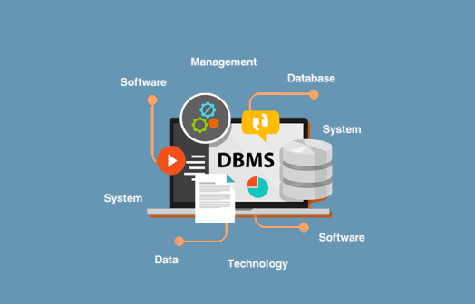

Een Database Management Systeem is een softwareprogramma dat helpt bij het beheren van gegevens in een database. Een databse is een verzameling van gegevens die op een georganiseerde manier wordt opgeslagen, zodat je er snel en makkelijk toegang toe hebt Het DBMS zorgt ervoor dat de gegevens op de juiste manier worden opgeslagen, dat je ze kunt bewerken (toevoegen, verwijderen of aanpassen) en dat je snel kunt zoeken naar specifieke informatie.
Het Database Management System zorgt voor belangrijke taken zoals het opslaan en organiseren van gegevens. Ook regelt het de beveiliging door ervoor te zorgen dat alleen de juiste mensen toegang hebben tot de gegevens, bijvoorbeeld door wachtwoorden of machtigingen in te stellen. Als meerdere mensen tegelijk met dezelfde database
werken, zorgt het DBMS voor toegangsbeheer, zodat er geen conflicten ontstaan. Bovendien zorgt de DBMS ervoor dat fouten voorkomen worden en dat de gegevens altijd juist en consistent blijven.
Stel dat je computer crasht, dan zorgt de DBMS ook voor herstel door de gegevens terug te zetten naar de laatste veilige versie.
